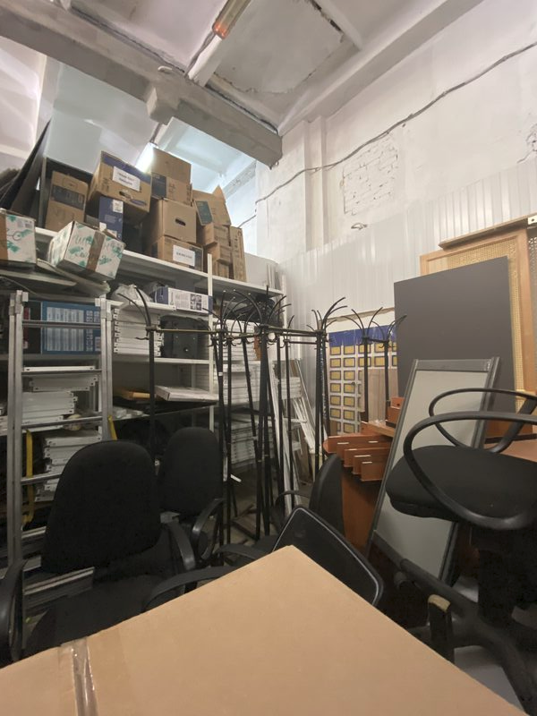

Консорциум «Кодекс» отправил в переработку более 80 единиц офисной мебели. Ваш старый офисный стол обретет вторую жизнь!
10 декабря 2020

Главная цель мероприятия — создание экспертной платформы для обмена опытом, проектирование дальнейшей работы по развитию интеллектуального волонтерства и запуска волонтерских инициатив в онлайн-режиме для сотрудников компаний.
На конференции много говорили о том, что волонтерство — один из важнейших инструментов поддержания социальной активности бизнеса и формирования устойчивых отношений с государством и местными сообществами.
В рамках мероприятия прошел деловой завтрак «Мы вместе: как объединить усилия бизнеса, органов власти, НКО и СМИ», состоялись сессия «Экология бизнеса: партнерство с НКО в интересах устойчивого развития регионов» и воркшоп «Корпоративное волонтерство в режиме онлайн: создаем возможности для каждого».
Для Консорциума волонтерство является очень важной составляющей частью работы компании и корпоративной культуры в целом, поэтому участие в таких мероприятиях планируется и в будущем.
У нас в офисе эко-пополнение! Приехали новые боксы для сбора макулатуры! Ищите их на всех этажах Консорциума
10 декабря 2020
Свое совершеннолетие отметил Детский дом № 2 в Биробиджане